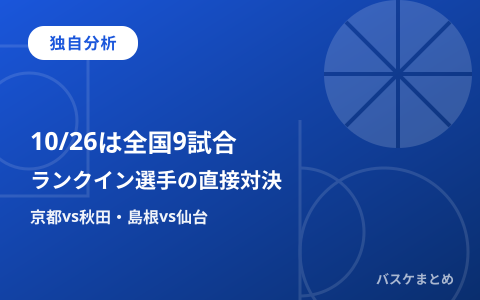

10/26はB.PREMIER9試合、独自分析「ランクイン選手の直接対決」京都vs秋田・島根vs仙台、広島はベスト52人で横浜BCと対戦

2026年10月26日（月）は、B.PREMIER9試合が行われます（B.ONE・B.NEXTはこの日試合なし）。当サイトでは、公式サイトで確認済みの本日の対戦カードと、同じく確認済みの公式スタッツ（今季平均EFF・ポジション別ベスト5／サブ5）を突き合わせ、「両チームにランクイン選手がいるカード」「1クラブからランクイン選手を2人出すカード」を独自に比較します。あわせて、直近の報道で確認できた2試合の見どころも紹介します。平均EFFは出場時間や勝敗を保証するものではなく、本稿はあくまで確認済みデータに基づく見どころの切り出しである点を前提に読んでください。
本日(10/26)の確認済み日程・B.PREMIER9試合
対戦カードと開始時刻は、当サイトが本日未明の別記事作成時に公式日程ページ・公式試合詳細ページ（bleague.jp）で確認済みです（取得2026-10-26 02:22〜02:23 JST、いずれも「試合前」ステータス）。
| リーグ | カード | 開始時刻 |
|---|---|---|
| B.PREMIER | 宇都宮—川崎 | 19:05 |
| B.PREMIER | A千葉—群馬 | 19:05 |
| B.PREMIER | 横浜BC—広島 | 19:05 |
| B.PREMIER | 富山—茨城 | 19:05 |
| B.PREMIER | 信州—神戸 | 19:05 |
| B.PREMIER | 島根—仙台 | 19:05 |
| B.PREMIER | 佐賀—A東京 | 19:05 |
| B.PREMIER | 長崎—琉球 | 19:05 |
| B.PREMIER | 京都—秋田 | 19:15 |
【独自分析①】両チームにランクイン選手がいるのは京都—秋田・島根—仙台の2カードのみ
当サイトが確認済みの公式スタッツ（今季平均EFF、ポジション別ベスト5・サブ5）によると、本日9試合のうち「両チームからランクイン選手が1人以上出場予定」の条件に当てはまるのは京都—秋田と島根—仙台の2カードだけです。京都はC チャールズ・ジャクソン（サブ5・30.7）、秋田はPG マーク・スミス（ベスト5・26.2）。島根はPF ニック・ケイ（サブ5・27.0）、仙台はSG ジャレット・カルバー（ベスト5・30.0）がそれぞれランクインしています。数値だけを見ると、京都のジャクソン（30.7）が本日ランクインする10人の中で2番目に高い値です。あくまで今季平均の数値同士を突き合わせた結果であり、出場や個人の活躍・勝敗を予測するものではありません。
| カード | 該当選手・部門 | 今季平均EFF | 試合数 |
|---|---|---|---|
| 京都—秋田 | チャールズ・ジャクソン（C・京都） | 30.7 | 9 |
| 京都—秋田 | マーク・スミス（PG・秋田） | 26.2 | 9 |
| 島根—仙台 | ニック・ケイ（PF・島根） | 27.0 | 8 |
| 島根—仙台 | ジャレット・カルバー（SG・仙台） | 30.0 | 9 |
【独自分析②】横浜BC—広島は、広島がベスト5を2人起用する唯一のカード
本日9試合の中で、1クラブからベスト5ランクイン選手を2人出場させる予定なのは広島のみです。PF ドウェイン・エバンス（28.6）とC コフィ・コーバーン（30.9）の2人で、コーバーンの30.9は本日ランクインする10人の中で最高値にあたります。対する横浜BCにはベスト5・サブ5のランクイン選手はいません。人数・数値の多さがそのままスコア差につながるとは限らず、あくまで「データ上の見どころの多さ」として捉えるのが妥当です。
| クラブ | ランクイン選手 | 区分・部門 | 今季平均EFF | 試合数 |
|---|---|---|---|---|
| 広島 | コフィ・コーバーン | ベスト5・C | 30.9 | 9 |
| 広島 | ドウェイン・エバンス | ベスト5・PF | 28.6 | 8 |
【独自の注目ポイント】長崎—琉球は前シーズンB1チャンピオンシップ・ファイナルの再戦
報道によると、2025-26シーズンのB1チャンピオンシップ（CS）ファイナルは長崎ヴェルカと琉球ゴールデンキングスの対戦となり、長崎が2戦先勝でシリーズを制して同シーズンの王者となったと報じられています。本日19:05に行われる長崎—琉球は、その王座決定戦の両チームが新シーズンの公式戦で顔を合わせるカードです。この点はbleague.jp本体で直接確認したものではなく、スポーツ報道各社（下記出典）の記事を根拠としています。前季の結果が今季の戦力・順位をそのまま反映するとは限らない点にご留意ください。なお、本日時点の今季平均EFFランキング（ベスト5・サブ5）には両クラブともランクインはありません。
【参考】富山—茨城・佐賀—A東京は直近の結果が絡む一戦
報道記事の見出しによると、茨城ロボッツは10月22日の対戦でアルバルク東京（A東京）から「17度目の対戦で初勝利」を挙げたとされています。本日19:05の富山—茨城は、茨城がその直後に迎える一戦です。一方のA東京も、同じ敗戦の直後に本日19:05の佐賀—A東京を迎えます。いずれも直近1試合の結果を踏まえた見どころであり、両クラブの現在の順位や連勝・連敗の状況そのものはWeb検索でも複数ソースでの裏取りができず、本稿では未確認として扱います。
Q&A
Q. この記事は結果を予測するものですか？
A. いいえ。確認済みの今季平均EFFと本日の対戦カード、および報道で確認できた直近の結果・対戦史を突き合わせた、見どころの比較・分析です。出場確定や勝敗を予測するものではありません。
出典：B.LEAGUE公式（日程・公式スタッツ、別記事作成時に確認済みのデータを含む）
https://www.bleague.jp/schedule/?tab=1&year=2026&mon=10&day=26（B.PREMIER日程）
https://www.bleague.jp/schedule/?tab=2&year=2026&mon=10&day=26（B.ONE日程）
https://www.bleague.jp/schedule/?tab=3&year=2026&mon=10&day=26（B.NEXT日程）
https://www.bleague.jp/stats/?year=2026&tab=1&target=player-b1&value=EFFPG&o=desc&e=2&dt=avg（B.PREMIER 今季平均EFF）
https://www.bleague.jp/news/injury.html（公式インジュアリーリスト）
https://basketballking.jp/news/japan/20261023/639178.html（茨城のA東京戦勝利を報じる記事）
https://news.livedoor.com/article/detail/31341630/（前季B1CSファイナル・長崎vs琉球を報じる記事）